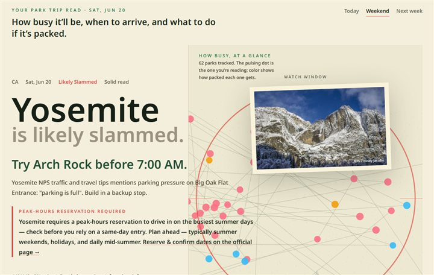
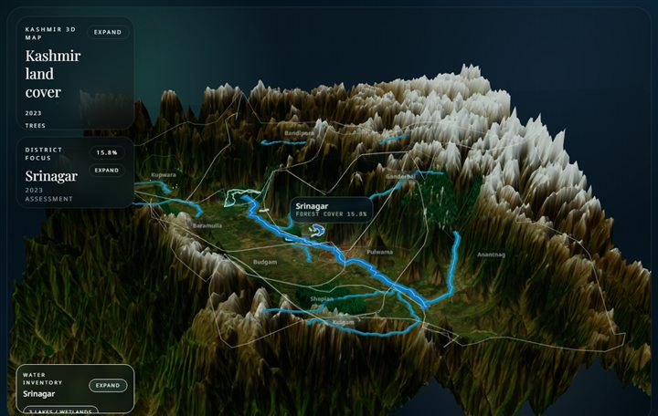
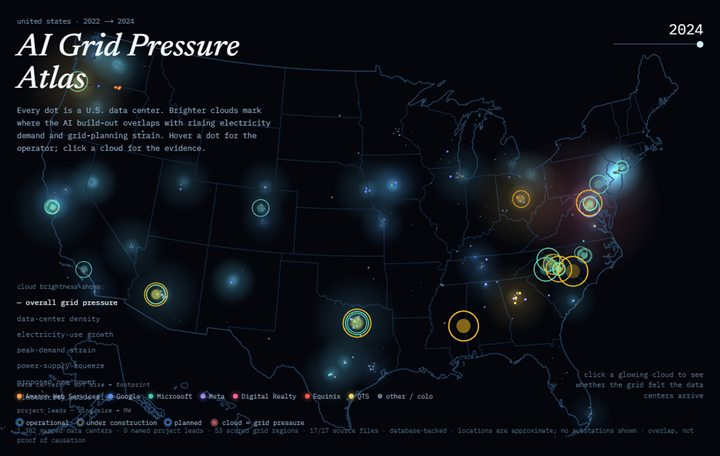
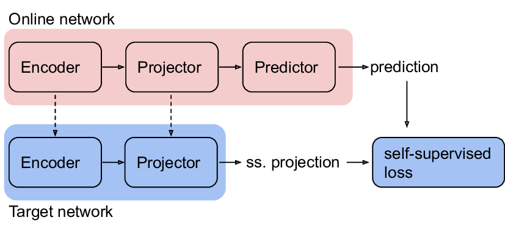
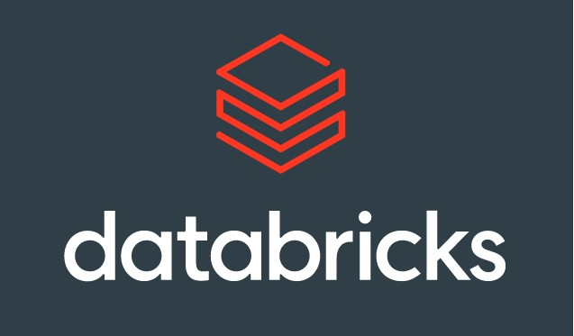
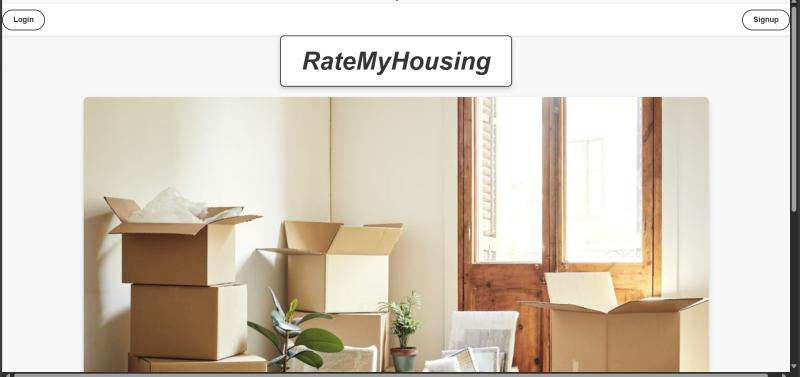
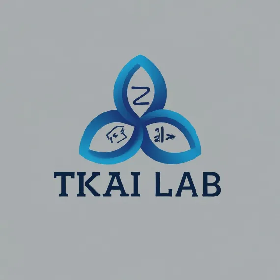

Current Work
Automation, AI research, industrial data, archives, robotics, and grid tools.
Automation / AI Research / Software / Data
Focus
Building software and data tools that fill the gap between messy systems, AI ideas, and work people actually need to get done.
Current Work
Automation, AI research, industrial data, archives, robotics, and grid tools.
Databricks
Azure
SQL
AI
Python
C++
Informatica
Fabric
Power BI
Agents, research, and practical tools.
Pipelines, validation, archives, and dashboards.
Automation systems and interfaces people use.
OT steel data modeled at Nucor
breakout-risk forecast accuracy
event-review accuracy, C3 AI agent
data assets centralized (Informatica)
accounts managed, audit errors
records in the Paperstack archive
Projects
Breakout-risk modeling, C3 AI monitoring, and Informatica data marketplace work across Azure and Databricks data sources.
Read experience
Next.js / Cloudflare D1 / NPS + NWS data
A trip planner that forecasts crowds and weather across U.S. national parks — live NPS and National Weather Service data, when-to-arrive advice, per-park backup plans, and a clickable park map.
Open project
Three.js / WebGL / Elevation rasters
A free-flowing 3D terrain atlas of Kashmir built from real elevation rasters — fly over the valley around Srinagar with ambient land-cover and travel context layered onto the landscape.
Open prototype
Next.js / D1 / EIA · eGRID · NREL data
An ambient U.S. map scoring where AI data centers strain the electric grid — one pressure score per region from EIA, eGRID, NREL, and OSM sources, shown as glowing nodes you can explore.
Open prototypeReact / Next.js / SQL / Cloudflare D1
Built a searchable historical-newspaper archive with React, Next.js, Cloudflare APIs, media previews, source links, reviewer metadata, SQL/D1 schemas, and backfills across 3,000 records.
Open project
Industrial Vision / PyTorch / ResNet-18
Trained Bootstrap Your Own Latent on 12,568 unlabeled steel surface images, then fine-tuned ResNet-18 across four defect categories to show how self-supervised pretraining can reduce annotation effort for surface inspection.
View repoC++ / CUDA / Parallel Processing
Built CUDA C/C++ kernels for record matching and duplicate-check workloads, using Bloom filters, hashing, memory layout changes, and parallel reductions to make high-volume validation faster and reproducible.
View GitHub
Databricks / PySpark / Lakehouse
A Databricks Asset Bundle with PySpark notebooks, Delta Live Tables, API secrets, scheduled refresh jobs, H3 heatmaps, DBSCAN clustering, and validation/deploy commands for repeatable geospatial analytics.
View work
AI-Assisted Systems Tooling
A multi-agent workflow for inspecting connected data, routing dependency questions, tracing anomaly paths, logging agent decisions, and making repeated investigation runs easier to review and debug.
View repoOpen Source CLI Contribution
Contributing to a JavaScript/TypeScript CLI that syncs X/Twitter bookmarks locally, makes them searchable, and supports agent workflows through terminal access, local storage, and reviewable command behavior.
View repoCurrent Engineering Ramp System
A website I use to organize learning resources across Windows Server, Visual Studio, SSMS, C#/.NET Core, .NET Windows services, Angular, SQL Server, Azure DevOps/Pipelines, healthcare systems, and AI-assisted coding practice.
Open project
User-Facing Application
A Python-based housing review project built around user-facing comparison, practical data capture, and helping people make better housing decisions faster.
View repoResearch Foundation
Earlier self-supervised image representation learning work exploring Bootstrap Your Own Latent on CIFAR images before adapting the framing toward industrial inspection and low-label defect review.
View repoExperience
Nucor
Industrial data work across Databricks, C3 AI, Informatica, Azure, and governance workflows.

TKAI Lab / University of South Florida
AI research in representation learning, training alternatives, and video anomaly detection.
RoboBulls / University of South Florida
Autonomous robotics work in path planning, simulation, and repeatable maze traversal.
USF Business and Finance
Finance workflow automation, JIRA process design, and compliance-aware operations.
Research & Recognition
Research & technical notes
Implemented and tested a replacement training method for backpropagation across autoencoder and variational autoencoder experiments.
Built a pipeline to rank abnormal segments in long surveillance videos and reduce frame-level labeling needs.
Explored self-supervised learning for steel surface inspection where labeled examples are limited.
Notes from building tools where source quality, validation, and clear interfaces matter as much as the model or UI.
Leadership
Led Python workshops, organized qualifiers and review sessions, and helped students build stronger problem-solving routines.
Collaborated on autonomous maze-solving software, simulation checks, and path-planning logic.
Awards & scholar programs
Contact